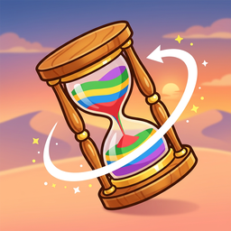
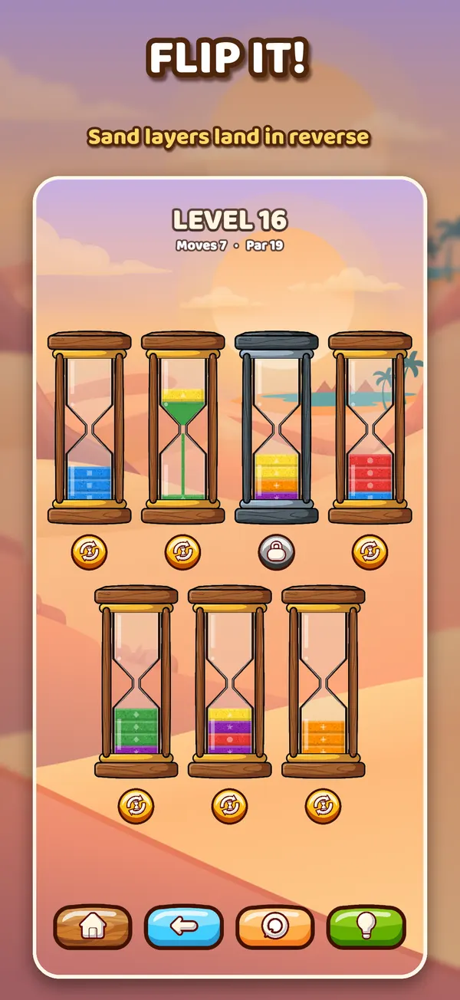
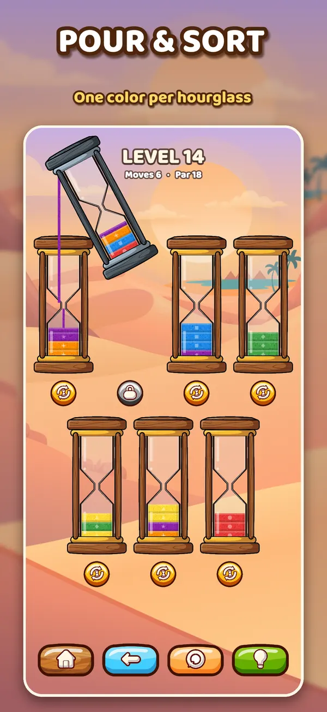
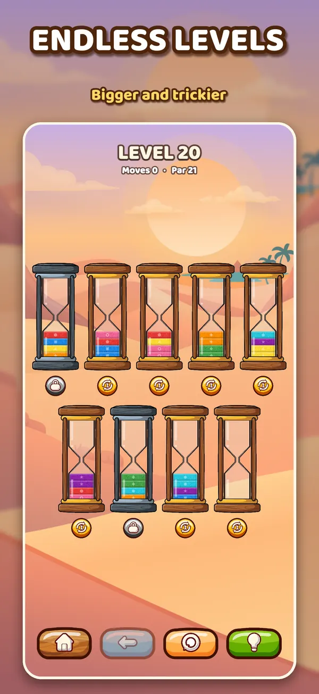
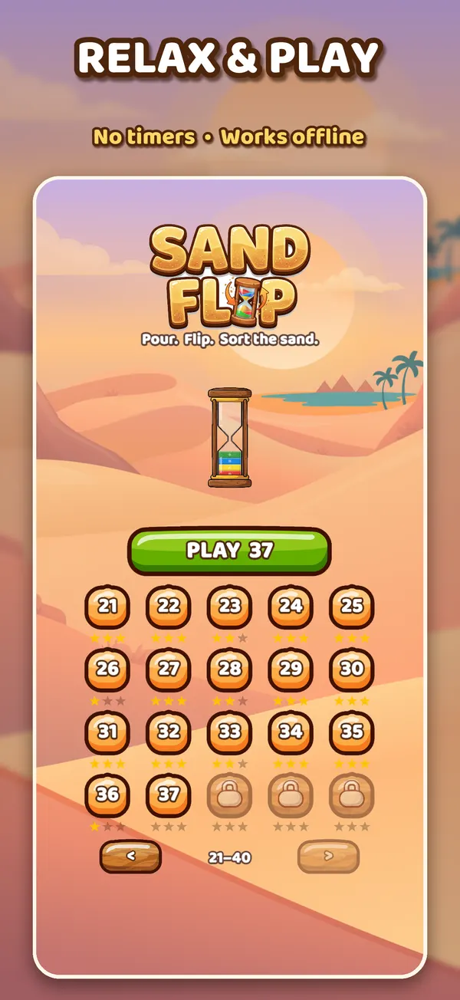

Sand Flip
The hourglass sorting puzzle for iPhone and iPad. Pour colored sand, flip hourglasses to reverse the layers, and sort every color.




How to play
Sort the sand so that every hourglass holds just one color.
- Tap an hourglass, then tap another to pour its top sand. Sand only lands on the same color or in an empty hourglass.
- Tap the yellow button under an hourglass to flip it. The sand falls through the neck, so its layers end up in reverse order.
- Iron hourglasses are bolted down: you can pour in and out of them, but not flip them.
- Finish in par moves or fewer for three stars.
Endless levels
After the first twenty levels the puzzles never run out. They slowly grow bigger, with more colors and more iron hourglasses.
Every few stages there is a HARD level with only one empty hourglass, where clever flipping is the key.
There are no lives, energy bars or timers. Undo as much as you like, and tap the light bulb for a hint.
Questions
Where is my progress saved?
Your levels and stars are stored only on your device. Deleting the app removes them.
Does it need an internet connection?
No. Sand Flip works fully offline.
Are there ads or in-app purchases?
No.
I am stuck on a level. What can I do?
Tap the light bulb for the next move, or the arrow button to undo. Every level is checked by a solver, so it can always be solved.
I find some colors hard to tell apart.
Every sand color also carries its own small symbol (circle, square, triangle, star and more), so you can sort by shape too.
Support
Found a bug or have a question? Please open an issue on GitHub and we will get back to you.
Privacy
Sand Flip collects no data. Read the full privacy policy.